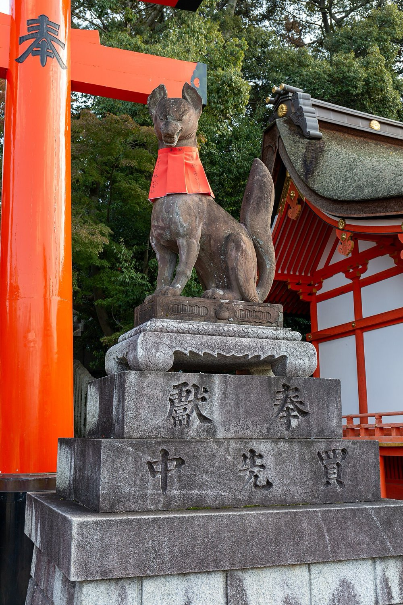

The shrine of ten thousand vermilion torii gates snaking up a forested mountain. It's the single most iconic sight in Japan, and it's free and open 24 hours, which is exactly how you beat the crowds.



Things to do
01Senbon Torii
The famous twin tunnels of gates right after the main shrine, the photo everyone comes for.
02The mountain climb
Gates continue all the way up Mount Inari, about 2 hours round trip if you go to the top.
03Yotsutsuji viewpoint
Halfway up, a wide view over Kyoto, most people turn around here and that's plenty.
04Fox statues
Inari's messenger foxes guard every stage of the climb, keys and scrolls in their mouths.
05Street snacks
The approach street does grilled mochi and inari sushi, the fried tofu the foxes supposedly love.
Good to know
- Go at 7am or earlier, by 9 it's shoulder to shoulder in August.
- The higher you climb the emptier the gates, photos get better with altitude.
- It's a real hike in summer heat, bring water.